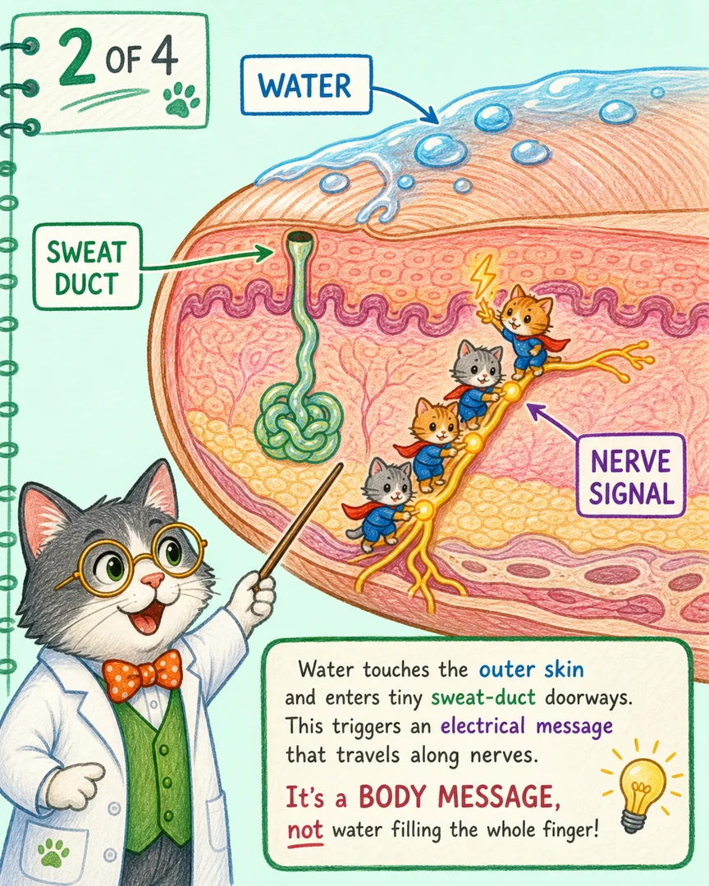
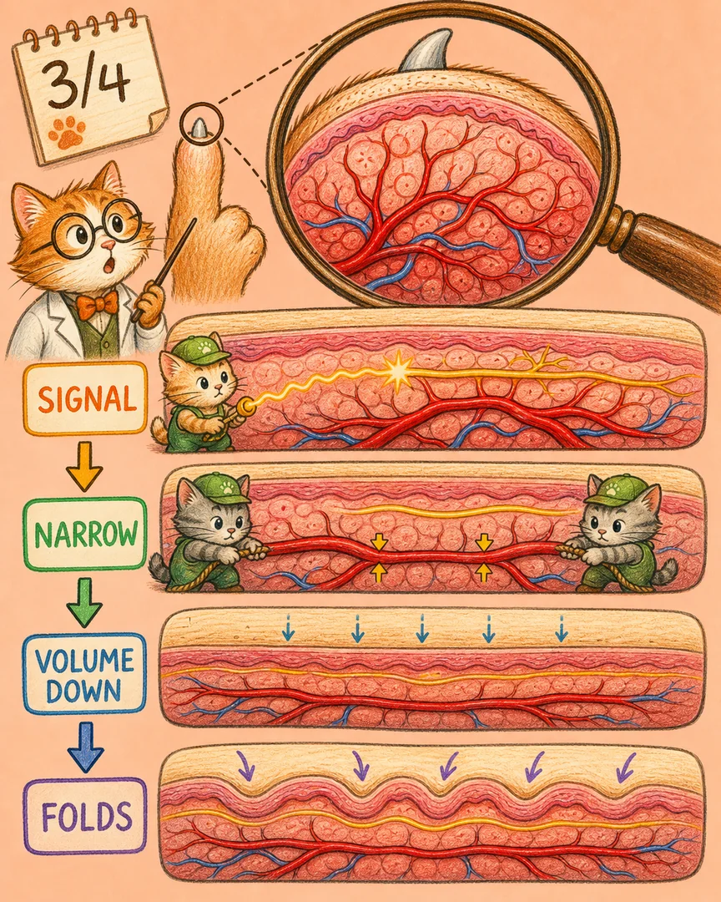
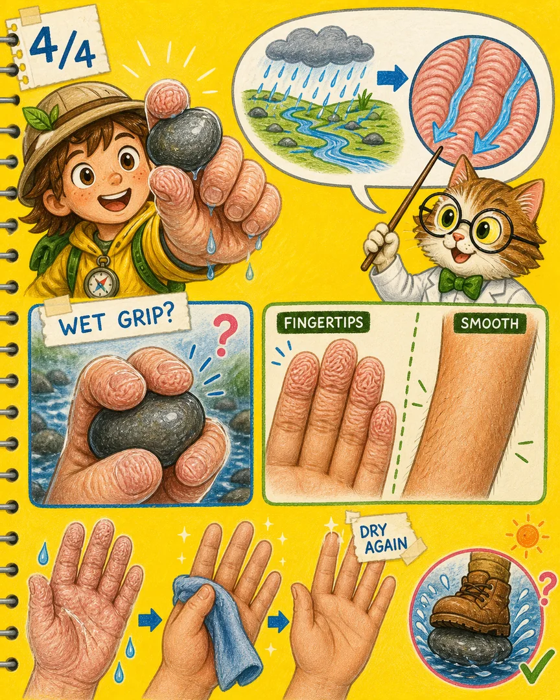
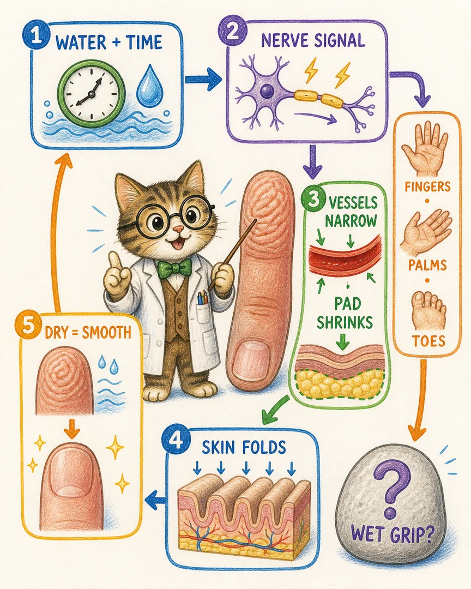

手放在水里泡太久，为什么会发皱？
明明只是碰到了水，手指却像突然长出一条条小沟。是水把皮肤泡大了吗？喵博士带探险家缩小到指尖里面看看。
在我们的世界里，那其实是……
指尖的神经小猫收到“泡水很久”的消息后，请血管小猫把通道收窄一点。指腹里面的血量减少、体积微微变小，可外面的皮肤没有跟着缩成同样大小，于是只好折出一道道小沟。
所以，皱纹不是水把整根手指灌胖了，而是身体主动做出的一连串反应。喵呜，宇宙的奥秘就在小猫的爪子尖上！
水和时间一起敲门

短短冲一下手，信号还不明显。持续泡在水里，指尖和脚趾这些没有毛、汗管很多的皮肤最容易启动反应。每个人出现皱纹的速度并不完全一样，水温也会影响速度。
神经小猫开始传话

科学家已经知道，这件事需要自主神经系统参与，也就是那些不用我们下命令、会自己照管身体的神经小猫。至于水最初怎样按下“传话按钮”，科学家仍在继续研究；一个重要线索是，水可能经由汗管改变皮肤局部的盐分平衡。
重要线索：如果只是外皮吸水膨胀，神经通路完不完整就不该那么重要；可实际观察到，某些神经受损区域泡水后不会正常起皱。
指腹变小，外皮折出小沟

- 泡水一段时间，局部信号出现。
- 交感神经小猫传话，让指尖血管收窄。
- 指腹血量减少，里面的体积微微下降。
- 外层皮肤被向下牵拉，折成一道道皱纹。
把手擦干、离开水一阵子后，血管慢慢恢复，指腹重新饱满，皱纹通常就会退去。
这些小沟可能有什么用？

有研究发现，皱起的手指在搬动湿物体时可能更利索，沟纹也许能帮水让路，像雨天轮胎的排水纹。不过，“帮助湿地抓握”目前更适合看作有证据支持的功能解释，而不是已经盖章的唯一目的。
它也不会让全身都一样发皱：反应最明显的是手指、手掌、脚趾和脚底。普通洗手时间太短，往往还来不及出现明显沟纹。
让模型做一个新预测
- 用舒适的温水泡一只手，另一只手保持干燥。
- 每隔几分钟比较指尖和前臂：哪里先出现变化？
- 擦干后继续观察：小沟会不会慢慢消失？
我们的预测：泡水时间越久，指尖通常越容易起皱；前臂不容易出现同样的深沟；离开水后会逐渐恢复。皮肤有伤口或不舒服时，就先不做实验。
从一滴水，到一道皱纹

探险家已经抓住了关键：我们看到的是皮肤的小沟，真正让它发生的，却是藏在下面的神经、血管和体积变化一起接力。
下一枚好奇钩子：如果把手泡在更温暖或更凉的水里，哪一边会更快起皱？先画下你的预测，再去寻找证据。
这就是喵博士与探险家共同找到的答案：水没有把手指泡成皱纸，而是神经请血管收窄，让变小的指腹把皮肤折成了沟。